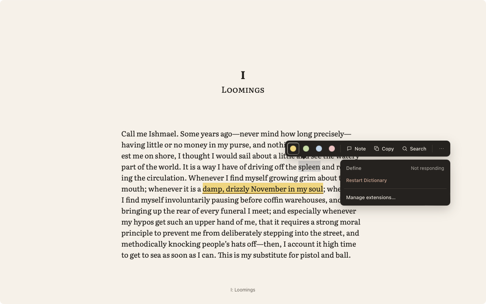

Phase 7 review: extensions
Each mock (left) beside the app, 1280 × 800. The captures were taken on Desktop 2 (LINEN_SPACE=2) by the window server's capture of the app's own window. Approving makes them the Phase 7 baselines (item 24). decide marks what depends on items 21–23 (D4, G1, G7).
Screen 11 — Settings › Extensions


- Matches the mock:
- the sidebar, the intro and Install from file…;
- each extension with its name, “Built-in” or “Theme pack”, the version and “Off”, and its description;
- “Can access”, with network permissions in accent and a globe;
- “Adds”, and the theme pack's “Can: Nothing — themes contain no code”;
- the switch;
- the failure box (“Stopped responding twice recently and was restarted. Reading wasn't affected.”) with Restart and Disable.
- expectedThe extensions are the samples and test packages: Markdown Export (built in), Dictionary, Night Owl, and a test extension turned off. The mock's “Reading Time” needs session events, which come in 1.1 (C3).
- decideThe icon is the name's first letter; manifests have no icon field yet. Each extension also has “Show its commands in the ⋯ menu” (P8 pinning) and Remove… (P5). The mock draws neither.
- expected“Restart without extensions” and the ⇧ hint are at the foot of the list, below this crop.
- expectedThe window buttons look pale: on Desktop 2 the window is never the active window.
Screen 12 — Extension failure, contained



- Matches the mock's panel:
- the core actions render at once, and the extension actions sit behind “⋯” (P10);
- a stuck action shows “Not responding” with “Restart Dictionary”;
- “Manage extensions…” opens Settings.
- expectedThe mock's second extension (Translate) is not a sample.
- expectedThe selection is grey, and the book's highlight shows beside it. The grey is macOS's colour for a selection in an inactive window, since on Desktop 2 the window is never active.
Also in Phase 7 (no mock)
- decideThe install sheet (G1) is covered by the end-to-end check P5-install-consent, and item 22 describes it. It shows:
- “Install “Dictionary”?” and “Not verified by Linen”;
- the permissions in plain words, with the highlighted ones in accent;
- what it adds;
- Cancel and Install.
- decideExtension Navigator tabs (G7) follow Notes; several collapse under “More”. Their pages use Linen's style kit in the current theme.
- expectedScreen 04 differs from its baseline by 0.12%: the focus ring on the current Contents row is not drawn, because WebKit draws no focus ring in an inactive window. Reading on Desktop 1 still shows it; this is a property of running the tests on Desktop 2.